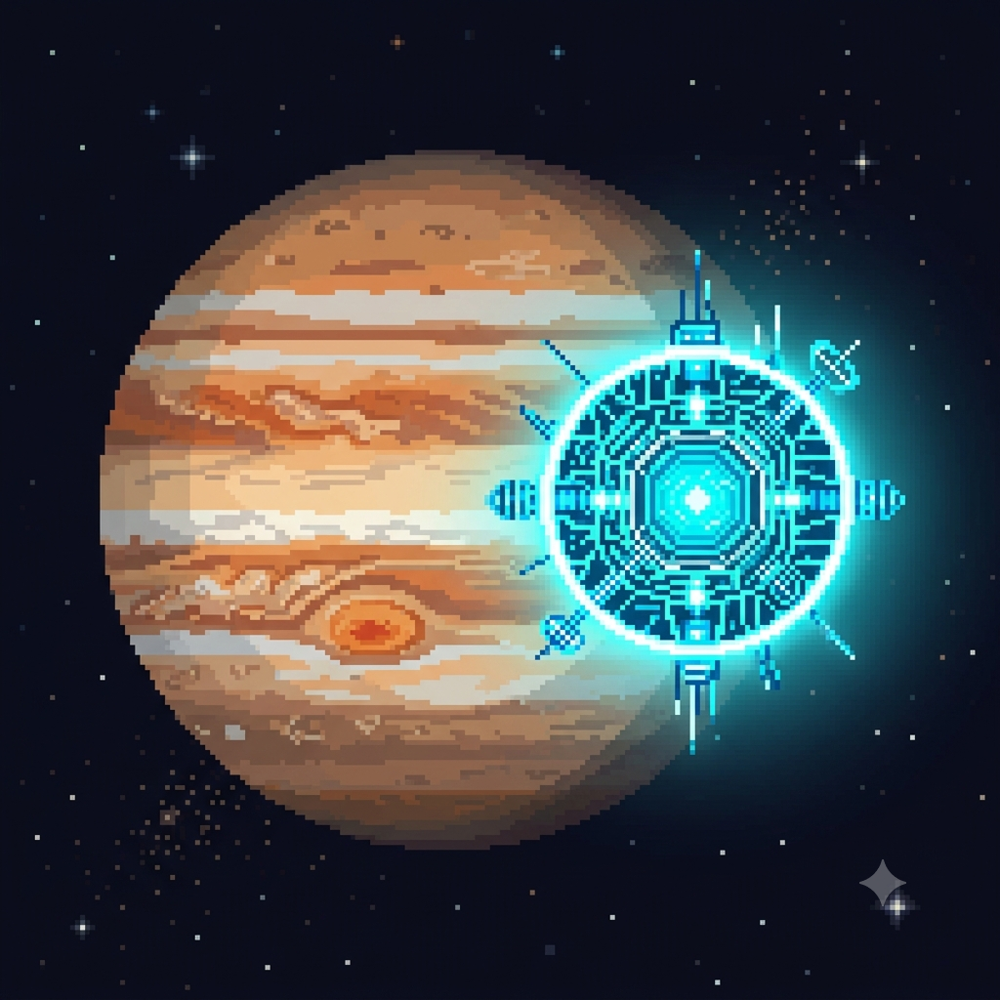

Acelerando sua mente no ritmo da Inteligência Artificial e do Pixel Art!
Criando uma Galáxia Artificial com IA e Piskel
Por: Mirella Nogueira
Você já imaginou criar uma Galáxia Artificial inteira usando códigos? Com o avanço da IA generativa, algoritmos agora simulam sistemas cósmicos complexos em segundos. Usando o Piskel, transformamos esse visual na clássica estética retro pixel art!

O Nascimento de Estrelas Digitais
Por: Mirella Nogueira
Integrar ferramentas de IA nos dá um ponto de partida incrível para paletas de cores e composições espaciais. No nosso laboratório conjunto, alimentamos redes neurais para gerar conceitos astronômicos e os refinamos frame por frame dentro do editor do Piskel.
Algoritmos de IA na Arte de 8-Bits
Por: Mirella Nogueira
O limite entre a automação inteligente e o design manual está sumindo. Criar texturas para nebulosas artificiais ficou muito mais prático quando unimos matemática procedural à simplicidade técnica das grades limitadas do pixel art clássico.
Inteligência Artificial no Trabalho e nos Estudos
Fonte: MIT Technology Review
As ferramentas de IA se tornaram assistentes indispensáveis, mas usá-las da forma errada pode prejudicar seu aprendizado ou até sua reputação profissional. O segredo está em usar a tecnologia como copiloto, não como piloto automático. Mas como podemos usar? Na criação de cronogramas de estudo, explicação de conceitos complexos de forma simples (método Feynman) e brainstorming de ideias.
Protegendo sua "Vida Digital" em 2026
Fonte: Cartilha de Segurança para Internet do Cert.br
Fonte:Guias de Alerta da ANATEL
Com o avanço da tecnologia, os ataques virtuais também ficaram mais inteligentes. Se você ainda usa a data do seu aniversário ou o nome do seu pet como senha — ou pior, repete a mesma combinação no e-mail, no banco e nas redes sociais —, sua identidade digital correndo perigo. A autenticação em duas etapas (2FA) é obrigatória hoje em dia, mas a forma como você recebe o segundo código faz toda a diferença.Criminosos conseguem aplicar o golpe do SIM Swap (clonagem do chip de celular). Se eles assumirem o seu número, receberão o código de segurança no lugar de você.Use aplicativos de autenticação como o Google Authenticator, Microsoft Authenticator ou 2FAS. Eles geram códigos temporários direto no seu aparelho, sem depender da rede de telefonia.